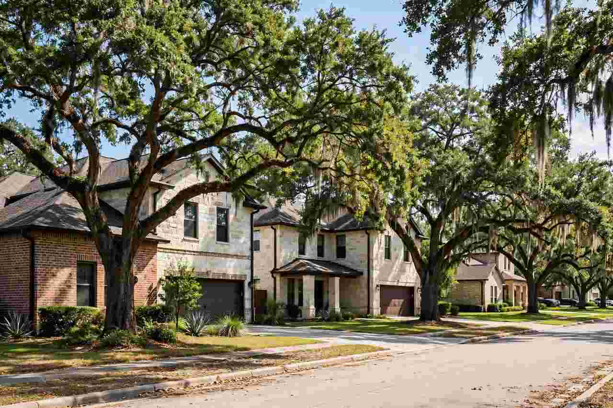

Rodent Control · Wills Point, TX
Fast Rodent Control in Wills Point, TX
Murvo delivers same-day rodent control in Wills Point for rats and mice in attics, walls, kitchens, and crawl spaces. Local crews start with a thorough inspection, then remove, exclude, and monitor until the problem is solved. You approve one flat-rate price in writing before any work starts, and every job carries a written guarantee across Van Zandt County. Service covers 1 ZIP codes across Van Zandt County, including 75169, with same-day appointments where schedules allow.
24/7Availability
1ZIP codes covered
Same-dayResponse
Licensed · Upfront options · Written guarantees · Fully insured
Wills Point at a glance
Local Rodent Control for Wills Point, TX.
Van Zandt County
Countyeastern Texas
RegionMesquite · 34 mi
Nearest metro197 miles northeast of Austin
From Austin1
ZIP codes covered Service by service in Wills Point
Rodent Control Services Available in Wills Point
The full range of residential and commercial rodent services in Wills Point and Van Zandt County - built around the species and housing here, from emergency removal and same-day control to exclusion, proofing, trapping, cleanup, and damage repair. Every service below is quoted flat-rate in writing and backed by our workmanship guarantee.
- 01Rodent Control↗
- 02Rodent Inspection↗
- 03Rodent Removal↗
- 04Rodent Exclusion↗
- 05Rodent Proofing↗
- 06Rat Control↗
- 07Mice Control↗
- 08Mouse Removal↗
- 09Rat Removal↗
- 10Rodent Trapping↗
- 11Rodent Baiting↗
- 12Rodenticide Application↗
- 13Attic Rodent Removal↗
- 14Crawl Space Rodent Removal↗
- 15Wall Rodent Removal↗
- 16Kitchen Rodent Control↗
- 17Garage Rodent Control↗
- 18Commercial Rodent Control↗
- 19Residential Rodent Control↗
- 20Emergency Rodent Removal↗
- 21Same-Day Rodent Control↗
- 22Rodent Damage Repair↗
- 23Rodent Waste Cleanup↗
- 24Rodent Disinfection↗
- 25Rodent Odor Removal↗
- 26Dead Rodent Removal↗
- 27Rodent Dropping Cleanup↗
- 28Rodent Exclusion for Roofs↗
- 29Rodent Exclusion for Vents↗
- 30Rodent Exclusion for Chimneys↗
Rodent Control in Wills Point
Rodent Control in Wills Point
What does a finished job actually look like? No new droppings, no nighttime movement, and no open route back inside. That is the standard Murvo works toward in Wills Point, with background-checked technicians, a written workmanship guarantee, and follow-up checks that confirm the quiet is real rather than temporary luck.
When you need rodent control in Wills Point, the job starts with what is actually happening in your part of Van Zandt County. Murvo crews work Wills Point every week, so they know how Roof rat (Rattus rattus) and Norway rat (Rattus norvegicus) behave around ranch and suburban single-family homes, older bungalows, and new-build subdivisions here - and where they get in: rooflines and attic vents, garage door seals, weep holes, and foundation cracks opened by shifting clay soil. We arrive equipped for the full job, confirm the flat rate in writing before work begins, and cover the whole Wills Point area, including Edgewood, Myrtle Springs. No call-center runaround and no open-ended hourly billing - just a local crew, a clear plan, and a written quote you approve first. Coverage for rodent control spans 1 ZIP codes in Van Zandt County, including 75169.
Our process follows five stages: Inspect, Remove, Exclude, Clean, and Monitor. Active animals are cleared with targeted trapping matched to the species, then openings around pipes, vents, and rooflines are sealed with copper mesh, hardware cloth, and metal flashing. Contaminated areas are cleaned safely, and monitoring visits confirm activity has stopped before we sign the job off. A technician first checks the attic, crawl space, garage, and kitchen, recording droppings, nests, gnaw marks, and entry gaps with photos. You approve every stage in advance, in writing.
Booking takes one call, and same-day appointments are available in most Wills Point areas. At the final visit we walk the finished work together and confirm monitoring is clear. Your technician inspects first, talks you through the plan in plain language, and only starts once you approve the written quote. Work is carried out in stages, with trap checks and sealing visits booked ahead. Questions are answered at every stage, day or night.
Need help quickly in Wills Point? Call any time — the emergency line is staffed 24/7, and same-day rodent control appointments are available in most areas. We inspect first, explain the plan in plain language, and put the flat rate in writing before work starts. The written quote for your Wills Point property will spell out exactly which of these applies before any work starts.
Murvo does not quote rodent control sight unseen, because species, activity, and sealing needs change the work involved. After inspection you get one flat-rate written quote, and that is the figure you pay. As national context only, Angi's 2026 figures put rat and mouse removal and control at an average of $396, with a typical range of $189 to $655 — a benchmark, not a Murvo price.
Rodent Inspection in Wills Point
Rodent Inspection in Wills Point
What should you expect to hold afterwards? Photographs, a species identification, a map of entry points, and priorities you can act on in stages. That is a Murvo rodent inspection in Wills Point: licensed and insured, unhurried, and honest about separating urgent problems from minor weaknesses that can safely wait.
In Wills Point, rodent inspection is not a generic spray-and-go service. Rodents exploit rooflines and attic vents, garage door seals, weep holes, and foundation cracks opened by shifting clay soil in ranch and suburban single-family homes, older bungalows, and new-build subdivisions, and a fix that ignores those routes does not last. Murvo's Wills Point team inspects first, shows you the evidence - droppings, gnaw marks, entry gaps - and then lays out the work with a flat-rate written quote. We serve all of Van Zandt County from Wills Point, including Edgewood, Myrtle Springs, and every job is covered by our written workmanship guarantee. In Wills Point, rodent inspection calls most often involve ranch and suburban single-family homes, older bungalows, and new-build subdivisions, where rooflines and attic vents, garage door seals, weep holes, and foundation cracks opened by shifting clay soil decide whether the fix holds.
Think of the inspection as three passes. The exterior pass checks siding, vents, pipe entries, and roof junctions for gaps and rub marks. The interior pass covers attic insulation, crawl-space corners, and kitchen voids for droppings, nests, and gnawing. The review pass brings it together: species, likely numbers, contamination, and the order in which fixes should happen. Each pass is photographed, and nothing is recommended without evidence from one of those passes to support it. The report separates what rodents are doing now from what the structure merely allows them to do later.
Your part is simple: point out noises, droppings, and any past problems. Before leaving, you walk through the evidence together, discuss priorities, and decide what happens next, with no obligation attached. Ours is everything else. A background-checked technician arrives on time, protects access areas, and inspects inside and out against a set checklist. If you decide to proceed, those findings become the working plan, so no second survey is needed before approved repairs begin.
You do not have to wait days for answers in Wills Point. Same-day rodent inspection appointments are available in most areas, urgent calls are taken 24/7, and most home inspections take under an hour. You finish the visit with photos, written findings, and flat-rate pricing for anything we recommend. In Van Zandt County, activity follows the local season, so timing the work matters as much as the method.
Your exact rodent inspection price is confirmed before we visit, and any follow-up work is quoted as a flat rate in writing after the inspection — no hourly billing. For context, Angi's 2026 data puts a professional rodent inspection nationally at $100 to $200, often credited toward the job if you proceed.
Rodent Removal in Wills Point
Rodent Removal in Wills Point
Most Wills Point removal calls start after a homeowner has already tried a store-bought trap and caught nothing. The difference is placement and persistence. Murvo locates nests first, sets traps on confirmed routes for Roof rat (Rattus rattus) and Norway rat (Rattus norvegicus), returns until catches end, and quotes the whole program as one flat-rate written quote.
When you need rodent removal in Wills Point, the job starts with what is actually happening in your part of Van Zandt County. Murvo crews work Wills Point every week, so they know how Roof rat (Rattus rattus) and Norway rat (Rattus norvegicus) behave around ranch and suburban single-family homes, older bungalows, and new-build subdivisions here - and where they get in: rooflines and attic vents, garage door seals, weep holes, and foundation cracks opened by shifting clay soil. We arrive equipped for the full job, confirm the flat rate in writing before work begins, and cover the whole Wills Point area, including Edgewood, Myrtle Springs. No call-center runaround and no open-ended hourly billing - just a local crew, a clear plan, and a written quote you approve first. Seasonal timing matters for rodent removal in Wills Point: rodents surge in Wills Point from September through March.
We favor trap-based, no-poison removal first where practical, which is safer around children and pets and avoids animals dying in hidden voids. Dead animals in inaccessible places are located and retrieved before odor develops, contaminated nesting material is removed, and sealing recommendations are prioritized so the route indoors closes permanently. Traps are matched to the species and setting, placed where droppings and rub marks show real travel routes, then cleared and reset until numbers reach zero. Monitoring then confirms the home stays clear.
Call, describe the signs, and we will set a visit window, often for the same day. With approval, traps go in immediately. Return visits are already booked, so clearing, resetting, and progress updates happen without you chasing anyone for news. The first appointment confirms species and numbers, explains the trapping sequence, and produces your written quote. Photographs and catch records are shared as the program runs, giving you visible proof of progress rather than a verbal summary at the end.
For active infestations in Wills Point, rodent removal can usually start the same day you call, and our team answers 24/7 when a rodent is loose in a living area. The first visit confirms activity and sets traps straight away; return visits then clear and reset them until monitoring shows the property is completely clear. If you are seeing signs now, an inspection this week is the fastest way to know which situation you are in.
How many animals are active, which species they are, and how much sealing follows removal all shape the price, so we assess first and then quote one flat rate in writing. Angi's 2026 national context — an average of $396 and a typical $189 to $655 range for rat and mouse removal — is provided for comparison only; your written quote is the exact Murvo figure.
Rodent Exclusion in Wills Point
Rodent Exclusion in Wills Point
Most Wills Point exclusion jobs start with a simple question: where exactly are they getting in? Murvo answers it opening by opening, then seals each one with material matched to its size and location. You see the full list, and one flat-rate written quote, before a single gap gets closed.
When you need rodent exclusion in Wills Point, the job starts with what is actually happening in your part of Van Zandt County. Murvo crews work Wills Point every week, so they know how Roof rat (Rattus rattus) and Norway rat (Rattus norvegicus) behave around ranch and suburban single-family homes, older bungalows, and new-build subdivisions here - and where they get in: rooflines and attic vents, garage door seals, weep holes, and foundation cracks opened by shifting clay soil. We arrive equipped for the full job, confirm the flat rate in writing before work begins, and cover the whole Wills Point area, including Edgewood, Myrtle Springs. No call-center runaround and no open-ended hourly billing - just a local crew, a clear plan, and a written quote you approve first. Coverage for rodent exclusion spans 1 ZIP codes in Van Zandt County, including 75169.
The sequence matters as much as the materials. A later monitoring check tests the work honestly, revisiting each sealed point for fresh rub marks, droppings, or gnawing. Active openings are closed first, inactive weaknesses next, and purely cosmetic gaps last, so protection arrives where pressure is highest. Photographs record every finished seal with its location, building a reference you keep. Because a properly sealed home needs far less ongoing treatment, exclusion also lowers long-term reliance on bait. The final monitoring visit therefore matters as much as the sealing day itself, and its findings are shared.
Book the survey, and we will work around your schedule, including urgent openings near wiring or food storage. Approved work is completed opening by opening, photographed as it progresses, and reviewed with you before the visit ends. Your technician lists every gap found, explains which are active, and quotes the sealing as one written figure. The finished inventory lists every material used at every opening, which makes later inspections faster and keeps the guarantee easy to enforce.
The first step is a survey, and in Wills Point we can often schedule that survey the same day you call about rodent exclusion. Sealing follows once active animals are cleared — nothing is ever sealed inside — and most homes are fully sealed within days, with entry points near wiring or food areas handled first. That is also why Murvo pairs removal with exclusion in Wills Point - treating the animal without closing rooflines and attic vents, garage door seals, weep holes, and foundation cracks opened by shifting clay soil rarely lasts.
After the survey of your Wills Point home, every opening that needs sealing is listed and priced as one flat-rate written quote, so you pay only for the work your property needs. For national context, Angi's 2026 data puts basic exclusion at $200 to $600 depending on access and the number of openings; that benchmark is not a Murvo price.
Rodent Proofing in Wills Point
Rodent Proofing in Wills Point
The best rodent problem is the one that never starts. Rodent proofing in Wills Point hardens your home before Roof rat (Rattus rattus) and Norway rat (Rattus norvegicus) move in: sealing gaps, screening vents, fitting door sweeps, and removing the food and shelter that attract them. Murvo surveys the whole property, prioritizes the work, and gives one flat-rate written quote for the work.
When you need rodent proofing in Wills Point, the job starts with what is actually happening in your part of Van Zandt County. Murvo crews work Wills Point every week, so they know how Roof rat (Rattus rattus) and Norway rat (Rattus norvegicus) behave around ranch and suburban single-family homes, older bungalows, and new-build subdivisions here - and where they get in: rooflines and attic vents, garage door seals, weep holes, and foundation cracks opened by shifting clay soil. We arrive equipped for the full job, confirm the flat rate in writing before work begins, and cover the whole Wills Point area, including Edgewood, Myrtle Springs. No call-center runaround and no open-ended hourly billing - just a local crew, a clear plan, and a written quote you approve first. Coverage for rodent proofing spans 1 ZIP codes in Van Zandt County, including 75169.
Materials follow the same standard as full exclusion work: copper mesh packed into irregular gaps, hardware cloth over openings that need airflow, flashing at vulnerable junctions, and sealants matched to smaller cracks. The written plan photographs each weakness, states who handles it, and schedules a seasonal re-check, since new gaps appear as a building ages and proofing works best as maintenance. Around kitchens, pipe runs and the voids behind units receive particular attention, because warmth and food meet there. Seasonal timing is noted in the plan as well.
Book a rodent proofing survey in Wills Point and we will arrange a visit time that suits your household, often the same day. Your technician walks the property with you, photographs weak points, and explains the plan in plain language. You receive a flat-rate written quote separating essential from optional work. Approved sealing is completed cleanly, then a seasonal re-check is scheduled. The finished work is fully guaranteed in writing by Murvo.
Rodent proofing is preventive, so there is rarely a rush, but surveys in Wills Point can often be arranged the same day you call, and always within a few days. Most proofing work is completed in a single visit once you approve the plan, and booking before colder weather gives your home protection ahead of the seasonal rush indoors. The written quote for your Wills Point property will spell out exactly which of these applies before any work starts.
We survey your Wills Point property first, separate the quick wins you can handle yourself from the specialist sealing, and quote the professional work as one flat rate in writing so spending can be staged. Angi's 2026 national context puts exclusion, the core of proofing, at $200 to $600 for basic work — a benchmark only, not a Murvo price.
Rat Control in Wills Point
Rat Control in Wills Point
What separates control from a temporary lull? Monitoring that continues after the last catch. Murvo keeps checking until routes stay quiet, removes trapped rats hygienically, and finishes with exclusion so replacements cannot follow the same path. Licensed, insured technicians document every visit, and urgent calls are answered 24/7.
When you need rat control in Wills Point, the job starts with what is actually happening in your part of Van Zandt County. Murvo crews work Wills Point every week, so they know how Roof rat (Rattus rattus) and Norway rat (Rattus norvegicus) behave around ranch and suburban single-family homes, older bungalows, and new-build subdivisions here - and where they get in: rooflines and attic vents, garage door seals, weep holes, and foundation cracks opened by shifting clay soil. We arrive equipped for the full job, confirm the flat rate in writing before work begins, and cover the whole Wills Point area, including Edgewood, Myrtle Springs. No call-center runaround and no open-ended hourly billing - just a local crew, a clear plan, and a written quote you approve first. Around Canton, East Tawakoni, Edgewood, the pattern is similar: Norway rat (Rattus norvegicus) finds rooflines and attic vents, garage door seals, weep holes, and foundation cracks opened by shifting clay soil first, and lasting rat control has to close those routes.
Safety shapes every placement decision. Droppings are handled carefully: surfaces are disinfected before cleaning, never dry-swept, because disturbing dry material can spread contamination through the air. Traps are positioned away from pet routes and play areas and explained to the household in advance. Where bait is genuinely necessary outdoors, it goes only inside locked, tamper-resistant stations, secured and labeled, never loose, and always alongside trapping and sealing rather than instead of them. Households receive that safety briefing in plain terms before the first station or trap is ever left behind.
After booking, we confirm access to attics, basements, and outbuildings so the first visit is productive. Follow-up visits are booked ahead, trapped rats are removed promptly, and a final monitoring check verifies the result before sign-off under our written workmanship guarantee. On arrival, your background-checked technician walks the property with you, sets out the plan, and starts pre-baiting straight away once you approve the quote. You see documented progress at each visit.
Rats do not wait, and neither do we: rat control in Wills Point can usually start with a same-day inspection, and urgent calls are answered 24/7. Pre-baiting begins on the first visit once you approve the written quote, traps are set as soon as rats are feeding confidently, and scheduled checks keep the program moving until activity stops. In Van Zandt County, most cases involve the Roof rat (Rattus rattus) and the Norway rat (Rattus norvegicus), so the inspection focuses on their routes first.
Rat work varies with species, colony size, and how many entry points need sealing, so Murvo inspects first and quotes one flat rate in writing. For national context only, Angi's 2026 data averages rat control and removal at $396, typically $189 to $655. That benchmark is not a Murvo price; the written quote for your Wills Point home is the exact figure you pay.
Mice Control in Wills Point
Mice Control in Wills Point
How many mice does one sighting usually mean? More than one, and the colony grows while treatment waits. Murvo builds mice control around trapping and sealing rather than bait, uses licensed, insured technicians, and confirms the result with follow-up monitoring, so a quiet week is verified instead of simply hoped for.
When you need mice control in Wills Point, the job starts with what is actually happening in your part of Van Zandt County. Murvo crews work Wills Point every week, so they know how Roof rat (Rattus rattus) and Norway rat (Rattus norvegicus) behave around ranch and suburban single-family homes, older bungalows, and new-build subdivisions here - and where they get in: rooflines and attic vents, garage door seals, weep holes, and foundation cracks opened by shifting clay soil. We arrive equipped for the full job, confirm the flat rate in writing before work begins, and cover the whole Wills Point area, including Edgewood, Myrtle Springs. No call-center runaround and no open-ended hourly billing - just a local crew, a clear plan, and a written quote you approve first. Around Canton, East Tawakoni, Edgewood, the pattern is similar: Norway rat (Rattus norvegicus) finds rooflines and attic vents, garage door seals, weep holes, and foundation cracks opened by shifting clay soil first, and lasting mice control has to close those routes.
Hygiene is part of control, not an afterthought. Technicians also review how food, pet supplies, and bird seed are stored, since an open supply restarts activity quickly. The program favors traps over bait throughout, which keeps family kitchens safer and makes every result countable and visible. Droppings in cabinets are never dry-swept; surfaces are disinfected first, following careful practice, so contamination is not pushed into the air, and nesting debris is bagged and removed. Follow-up monitoring then verifies the kitchen, attic, and voids together, rather than treating each room in isolation.
After booking, we confirm your time window and any rooms where you have seen droppings or heard scratching. Return visits clear and reset traps, then sealing is completed and the written guarantee confirmed at the final check. You approve the plan and price before trapping starts. On arrival, your background-checked technician inspects, sets clustered traps at proven hotspots, and talks you through pet and child safety around placements. No surprises are added later.
Mice multiply fast, so mice control in Wills Point is built to start fast too: a survey can often be arranged the same day you call, with traps set on that first visit once the quote is approved. Because mice investigate new objects quickly, catches usually begin soon after, and check visits follow until a final confirmation shows activity has stopped. That is also why Murvo pairs removal with exclusion in Wills Point - treating the animal without closing rooflines and attic vents, garage door seals, weep holes, and foundation cracks opened by shifting clay soil rarely lasts.
Mouse work is priced by the number of rooms affected and the amount of sealing involved, so Murvo surveys first and quotes one flat rate in writing. For national context only, Angi's 2026 data averages rat and mouse control and removal at $396, typically $189 to $655. That is not a Murvo price; your written quote is exact.
Mouse Removal in Wills Point
Mouse Removal in Wills Point
You found droppings in a cabinet or heard scratching in the attic of your Wills Point home, and you want the mice out, not managed indefinitely. Murvo's mouse removal locates nests and feeding areas room by room, runs a multi-trap program until catches reach zero, and seals access points behind it. One flat-rate written quote is agreed before work begins.
Homeowners in Wills Point call Murvo for mouse removal because the problem here is specific: Roof rat (Rattus rattus) pressure around ranch and suburban single-family homes, older bungalows, and new-build subdivisions, tight access at rooflines and attic vents, garage door seals, weep holes, and foundation cracks opened by shifting clay soil, and activity that follows the local season. Our Van Zandt County crews diagnose the real source before recommending work, explain the options in plain language, and quote one flat rate in writing. Across Wills Point - including Edgewood, Myrtle Springs - every visit is backed by licensed, insured technicians and our written workmanship guarantee. Around Canton, East Tawakoni, Edgewood, the pattern is similar: Norway rat (Rattus norvegicus) finds rooflines and attic vents, garage door seals, weep holes, and foundation cracks opened by shifting clay soil first, and lasting mouse removal has to close those routes.
The survey comes first, and it is deliberately thorough. Lofts, under-floor voids, cabinets, and the spaces behind kitchen units are checked for nests, droppings, and stored food caches. Traps are then set in multiples at proven points, because a single trap rarely reflects colony size. Returns are scheduled tightly: catches are cleared, traps reset, and numbers tracked until they fall to zero and stay there across a confirming check before sealing begins. Photographs of nesting sites help here, because they reveal how far activity had spread before trapping began.
As catches fall, the focus shifts in order: final clearing, disinfection of affected areas, then sealing of access points. Seasonal proofing can be arranged if your property has repeated fall problems. Your technician reviews the catch record with you at sign-off, confirms which rooms are fully safe to use, and leaves prevention advice plus guarantee paperwork. If signs reappear during monitoring, placements are restored under the same agreed program rather than starting a new conversation from scratch.
For mice active in kitchens or living areas of your Wills Point home, mouse removal can often begin the same day you call. That first visit surveys nesting sites and sets traps as soon as you approve the quote, and because mice investigate traps quickly, catches usually start fast. Return visits continue until numbers reach zero. In Van Zandt County, activity follows the local season, so timing the work matters as much as the method.
Rooms involved and sealing needed determine the cost of removal, so we survey first and agree a flat rate in writing before work begins. As national context only, Angi's 2026 data averages rat and mouse removal at $396, with a typical range of $189 to $655; that benchmark is not a Murvo price, and your written quote covers your exact program.
Rat Removal in Wills Point
Rat Removal in Wills Point
If a rat is loose in a living area tonight, call; our lines stay open 24/7. Murvo pairs urgent response with a documented plan: hygienic removal across repeat visits, evidence from monitoring at the end, and a final walkthrough, so clearance is demonstrated to you rather than simply announced.
Homeowners in Wills Point call Murvo for rat removal because the problem here is specific: Roof rat (Rattus rattus) pressure around ranch and suburban single-family homes, older bungalows, and new-build subdivisions, tight access at rooflines and attic vents, garage door seals, weep holes, and foundation cracks opened by shifting clay soil, and activity that follows the local season. Our Van Zandt County crews diagnose the real source before recommending work, explain the options in plain language, and quote one flat rate in writing. Across Wills Point - including Edgewood, Myrtle Springs - every visit is backed by licensed, insured technicians and our written workmanship guarantee. Coverage for rat removal spans 1 ZIP codes in Van Zandt County, including 75169.
Removal stays trap-led and exclusion-backed throughout. Monitoring devices and a documented final walkthrough then prove activity has ended, and proofing advice covers drains, vents, and rooflines going forward. Locked bait stations appear only where a site genuinely justifies them, positioned away from pets and food, labeled, and monitored on schedule; loose bait is never used. After clearance, contaminated areas are sanitized carefully, with surfaces disinfected before cleaning and droppings never dry-swept. That written evidence stays with you, including the monitoring readings that supported the decision to sign off.
Book and we will agree a visit time, with same-day appointments for active infestations where available. Repeat visits are scheduled in advance, progress is reported after each one, and sealing follows once catches stop and monitoring stays clear. Your technician assesses the colony, explains each stage, and confirms the written quote before pre-baiting begins. Every visit is documented with counts and locations, so the final clearance rests on a complete record rather than a single quiet check.
In Wills Point, rat removal can usually start the same day you call, with 24/7 answering for rats active in living areas. Pre-baiting begins on the first visit after you approve the written quote, and traps are set once rats feed confidently, typically within days. Repeat visits then run frequently until monitoring confirms the colony is gone. If you are seeing signs now, an inspection this week is the fastest way to know which situation you are in.
Rat removal pricing depends on colony size, access, and the sealing needed afterwards, so Murvo assesses your property first and quotes a flat rate in writing. For national context only, Angi's 2026 data averages rat removal at $396, typically $189 to $655. That is a benchmark, not a Murvo price, and your written quote covers the full program described.
Rodent Trapping in Wills Point
Rodent Trapping in Wills Point
Trapping is the most accountable way to clear rodents: every catch is counted, located, and recorded. Murvo's rodent trapping in Wills Point places traps perpendicular to walls and along beams, pipes, and fence lines where rodents actually travel, using snap traps, multi-catch devices, or live-capture options as the situation requires. You approve one flat-rate written quote before we start.
In Wills Point, rodent trapping is not a generic spray-and-go service. Rodents exploit rooflines and attic vents, garage door seals, weep holes, and foundation cracks opened by shifting clay soil in ranch and suburban single-family homes, older bungalows, and new-build subdivisions, and a fix that ignores those routes does not last. Murvo's Wills Point team inspects first, shows you the evidence - droppings, gnaw marks, entry gaps - and then lays out the work with a flat-rate written quote. We serve all of Van Zandt County from Wills Point, including Edgewood, Myrtle Springs, and every job is covered by our written workmanship guarantee. Around Canton, East Tawakoni, Edgewood, the pattern is similar: Norway rat (Rattus norvegicus) finds rooflines and attic vents, garage door seals, weep holes, and foundation cracks opened by shifting clay soil first, and lasting rodent trapping has to close those routes.
A trapping program starts with inspection: identifying the species, mapping runways, and finding where droppings and rub marks show real travel. Traps are set perpendicular to walls and along beams, pipes, and fence lines, matched to the setting. For rats, we pre-bait unset traps for several days, a step most DIY attempts skip, then set them for maximum effect. Mice receive clustered traps at hotspots. Technicians return on schedule to clear, reset, and record every catch. Placements shift as activity patterns change.
Between checks, leave devices untouched and note any new noises or droppings by room; that information sharpens the next visit. Your background-checked technician adjusts placements as the pattern changes and removes catches promptly and hygienically. The program ends with a clear monitoring result, a written summary of what was caught where, and sealing advice. The summary also notes which routes stayed busiest, information that makes any later exclusion work faster and more precisely targeted.
In Wills Point, a rodent trapping program can usually start the same day you call, with traps placed or pre-baiting begun on the first visit after you approve the quote. Mice often investigate within the first night, while wary rats need a few days of pre-baiting before traps are set. Scheduled checks then keep the program moving until numbers reach zero. A Wills Point inspection confirms it on site - dropping size, gnaw marks, and entry points tell the story quickly.
Trapping is usually quoted as part of a complete removal program rather than by the trap, and the price depends on species, activity level, and how many check visits are needed. Murvo inspects first and quotes one flat rate in writing covering the program and its check visits, so there are no per-visit surprises and no hourly billing at any stage.
Rodent Baiting in Wills Point
Rodent Baiting in Wills Point
Baiting done badly is a risk to pets, children, and wildlife, so Murvo never uses loose bait in Wills Point homes. Every station is tamper-resistant and locked, positioned along runways away from play areas and food, and paired with trapping and exclusion so bait is never the only step. One flat-rate written quote covers placement and monitoring.
Homeowners in Wills Point call Murvo for rodent baiting because the problem here is specific: Roof rat (Rattus rattus) pressure around ranch and suburban single-family homes, older bungalows, and new-build subdivisions, tight access at rooflines and attic vents, garage door seals, weep holes, and foundation cracks opened by shifting clay soil, and activity that follows the local season. Our Van Zandt County crews diagnose the real source before recommending work, explain the options in plain language, and quote one flat rate in writing. Across Wills Point - including Edgewood, Myrtle Springs - every visit is backed by licensed, insured technicians and our written workmanship guarantee. In Wills Point, rodent baiting calls most often involve ranch and suburban single-family homes, older bungalows, and new-build subdivisions, where rooflines and attic vents, garage door seals, weep holes, and foundation cracks opened by shifting clay soil decide whether the fix holds.
Where baiting is not appropriate indoors, we say so, and recommend trapping first followed by proofing of gaps around pipes, vents, and doors. Consumption records from each visit show whether activity is falling, holding, or moving, guiding whether stations stay, move, or come out entirely in favor of sealing and trapping alone. That exclusion-first approach reduces reliance on bait over time, which matters for households with children, pets, or visiting wildlife in Wills Point. You receive those records after every monitoring visit.
Booking rodent baiting in Wills Point starts with an inspection, not a station. Monitoring visits are scheduled before we leave, and stations come out once activity is confirmed clear. Your technician maps activity, reviews pet, child, and wildlife concerns with you, and confirms a flat-rate written quote before anything is placed. Approved stations are installed locked and labeled the same visit, with locations photographed for you. Your written guarantee covers the full program.
Deliberate setup matters more than speed with rodent baiting, but the first step is still fast: an inspection in Wills Point can often be arranged the same day you call. Stations are placed only after activity is mapped and you approve the written quote and each location, then monitoring runs on a fixed schedule until consumption stops and activity is confirmed clear. Murvo's Wills Point crews explain the finding either way, and the flat-rate quote leaves the decision with you.
Baiting cost depends on how many locked stations your property needs and how long monitoring runs, so Murvo inspects and maps activity first, then quotes one flat rate in writing covering placement and scheduled checks. There are no per-visit surprises, and because our approach is exclusion-first, the goal is always to reduce and eventually remove stations, not maintain them forever.
Rodenticide Application in Wills Point
Rodenticide Application in Wills Point
Regulation shapes product choice in Texas: California restricts anticoagulant rodenticides, other states impose their own limits, and Murvo complies with every applicable rule. You receive copies of product labels and safety information for anything applied at your Wills Point property, and we talk through children, pets, livestock, and wildlife concerns before any flat-rate written quote is agreed.
Homeowners in Wills Point call Murvo for rodenticide application because the problem here is specific: Roof rat (Rattus rattus) pressure around ranch and suburban single-family homes, older bungalows, and new-build subdivisions, tight access at rooflines and attic vents, garage door seals, weep holes, and foundation cracks opened by shifting clay soil, and activity that follows the local season. Our Van Zandt County crews diagnose the real source before recommending work, explain the options in plain language, and quote one flat rate in writing. Across Wills Point - including Edgewood, Myrtle Springs - every visit is backed by licensed, insured technicians and our written workmanship guarantee. Around Canton, East Tawakoni, Edgewood, the pattern is similar: Norway rat (Rattus norvegicus) finds rooflines and attic vents, garage door seals, weep holes, and foundation cracks opened by shifting clay soil first, and lasting rodenticide application has to close those routes.
Monitoring data guides the whole treatment: whether it continues, changes product, or stops entirely in favor of proofing alone. Dead rodents are retrieved promptly where accessible, stations are kept away from pet and child areas, and every product used is documented with its label and safety information, so nothing applied at your property is ever hidden from you. We prioritize sealing entry points with exclusion and physical removal so dependence on chemical control shrinks visit by visit. State restrictions are checked before product selection.
Booking rodenticide application in Wills Point starts with an inspection visit, often available the same day. If you proceed, stations are installed locked and labeled, monitoring visits are scheduled, and treatment continues only while monitoring data supports it, under our written workmanship guarantee. Your licensed technician confirms whether treatment is justified, explains safer alternatives first, and gives you a flat-rate written quote before anything is applied. You can stop the program at any point.
No responsible rodenticide application starts without an inspection, and in Wills Point that inspection can often be scheduled the same day you call. If treatment is justified and you approve the written quote, locked stations are installed on that visit. Monitoring then runs on schedule, and treatment stops as soon as the data shows activity has ended. If you are seeing signs now, an inspection this week is the fastest way to know which situation you are in.
Station numbers, the product permitted under Texas rules, and the length of monitoring all shape the price. Murvo inspects first, explains whether trapping or exclusion could avoid chemical control entirely, and then quotes one flat rate in writing before work begins. That quote covers scheduled monitoring visits, so there are no per-visit surprises later.
Attic Rodent Removal in Wills Point
Attic Rodent Removal in Wills Point
Most Wills Point attic jobs start with nighttime scratching that grows bolder over a week. Murvo inspects the attic, roof, and eaves together, identifies whether Roof rat (Rattus rattus) or Norway rat (Rattus norvegicus) is overhead, traps up there, and seals the roofline afterwards. One flat-rate written quote is agreed before removal begins.
Homeowners in Wills Point call Murvo for attic rodent removal because the problem here is specific: Roof rat (Rattus rattus) pressure around ranch and suburban single-family homes, older bungalows, and new-build subdivisions, tight access at rooflines and attic vents, garage door seals, weep holes, and foundation cracks opened by shifting clay soil, and activity that follows the local season. Our Van Zandt County crews diagnose the real source before recommending work, explain the options in plain language, and quote one flat rate in writing. Across Wills Point - including Edgewood, Myrtle Springs - every visit is backed by licensed, insured technicians and our written workmanship guarantee. Seasonal timing matters for attic rodent removal in Wills Point: rodents surge in Wills Point from September through March.
Attic work follows Inspect, Remove, Exclude, Clean, and Monitor. Once clear, roofline entry points are sealed with metal mesh and flashing as part of wider proofing, and dropping cleanup and disinfection are arranged where insulation is contaminated. A detailed inspection covers the attic, roof, and eaves, identifying species, nests, droppings, and gnawed cables. Targeted, humane trapping is then set in the attic to clear active animals quickly, with checks on schedule. Monitoring traps stay briefly after sealing to confirm the attic is empty and quiet.
Book an attic visit, same-day where wiring damage or heavy activity makes it urgent. Trapping starts after approval, follow-up checks are booked ahead, and sealing plus cleanup complete the sequence before monitoring confirms the result. Your technician inspects overhead and along the roofline, shows you photographs of the evidence, and confirms the written quote. Wiring or insulation concerns are flagged separately in writing, so you can arrange any specialist repairs with clear information in hand.
Overhead scratching in Wills Point often gets a same-day attic rodent removal visit, and attics with chewed wiring are prioritized because of the fire risk. Trapping starts on the first visit once you approve the written quote, checks run on schedule, and most attics are cleared and sealed within days. Monitoring stays in place briefly afterwards to confirm nothing remains inside. That is also why Murvo pairs removal with exclusion in Wills Point - treating the animal without closing rooflines and attic vents, garage door seals, weep holes, and foundation cracks opened by shifting clay soil rarely lasts.
Activity levels, roofline sealing, and whether contaminated insulation needs cleanup all affect attic pricing, so Murvo inspects first and quotes one flat rate in writing for the removal program. Cleanup options are priced separately in writing before you decide, so nothing is added once work is underway.
Crawl Space Rodent Removal in Wills Point
Crawl Space Rodent Removal in Wills Point
Murvo favors trapping and physical exclusion under Wills Point homes over poison, an approach that protects pets that may access the crawl space and avoids carcasses hidden where they cannot be reached. Licensed, insured technicians document every sealed opening with photographs, refit access panels securely, and back the finished work with our written workmanship guarantee and monitoring checks.
In Wills Point, crawl space rodent removal is not a generic spray-and-go service. Rodents exploit rooflines and attic vents, garage door seals, weep holes, and foundation cracks opened by shifting clay soil in ranch and suburban single-family homes, older bungalows, and new-build subdivisions, and a fix that ignores those routes does not last. Murvo's Wills Point team inspects first, shows you the evidence - droppings, gnaw marks, entry gaps - and then lays out the work with a flat-rate written quote. We serve all of Van Zandt County from Wills Point, including Edgewood, Myrtle Springs, and every job is covered by our written workmanship guarantee. In Wills Point, crawl space rodent removal calls most often involve ranch and suburban single-family homes, older bungalows, and new-build subdivisions, where rooflines and attic vents, garage door seals, weep holes, and foundation cracks opened by shifting clay soil decide whether the fix holds.
Work below a home follows a clear order. Only after clearance does exclusion begin: sturdy mesh across foundation vents, sealing around piers and plumbing penetrations, and secure refitting of access panels. Waste cleanup removes droppings and nesting, and monitoring checks afterwards confirm the space has stayed quiet before the job closes. Inspection comes first, with photographs establishing species, nesting sites, and damage to vapor barrier and pipe insulation. Trapping then clears active animals on scheduled checks. That photographic record matters later, because conditions under a home are easy to forget once panels close again.
Before the visit, unlock crawl-space access and mention any known leaks or standing water. Sign-off includes a walkthrough of the documented results, photographs of finished sealing, and your guarantee confirmed in writing for the completed work. Your background-checked technician inspects with protective equipment, sets traps at active areas after approval, and books follow-up visits ahead. Moisture findings are included in the closing notes, since fixing leaks and standing water lowers rodent pressure long after removal ends.
For crawl space rodent removal in Wills Point, inspections are usually arranged within a few days — and sooner when odors are drifting into living areas or activity sounds heavy. Trapping begins on the first visit after you approve the written quote, clearance and sealing follow in sequence, and monitoring stays in place until the space below is confirmed quiet. That is also why Murvo pairs removal with exclusion in Wills Point - treating the animal without closing rooflines and attic vents, garage door seals, weep holes, and foundation cracks opened by shifting clay soil rarely lasts.
Access, the number of vents and gaps to seal, and whether waste cleanup is required all shape crawl-space pricing, so Murvo inspects first and quotes one flat rate in writing. Cleanup options are priced in writing before you decide whether to include them, and there are no surprise charges for extra vents within the agreed scope.
Wall Rodent Removal in Wills Point
Wall Rodent Removal in Wills Point
Wall voids are hidden highways through ranch and suburban single-family homes, older bungalows, and new-build subdivisions in Wills Point: mice travel them between kitchens and attics, and rats use them to reach food unseen via rooflines and attic vents, garage door seals, weep holes, and foundation cracks opened by shifting clay soil. Our technicians carry inspection cameras for accessible voids, helping locate nests without opening large sections of drywall. If an animal has already died in the wall, retrieval and sanitation are handled too.
In Wills Point, wall rodent removal is not a generic spray-and-go service. Rodents exploit rooflines and attic vents, garage door seals, weep holes, and foundation cracks opened by shifting clay soil in ranch and suburban single-family homes, older bungalows, and new-build subdivisions, and a fix that ignores those routes does not last. Murvo's Wills Point team inspects first, shows you the evidence - droppings, gnaw marks, entry gaps - and then lays out the work with a flat-rate written quote. We serve all of Van Zandt County from Wills Point, including Edgewood, Myrtle Springs, and every job is covered by our written workmanship guarantee. Homes near Canton tend to show activity first in Wills Point, which is why inspections start with rooflines and attic vents, garage door seals, weep holes, and foundation cracks opened by shifting clay soil.
Locating comes before everything else in wall work. Technicians listen at different points, note when noises occur, trace likely entry routes from roofline, baseboards, and pipe runs, and use cameras in accessible voids to confirm where animals travel and nest. Trapping is then placed at those access points to draw rodents out of the void. Checks follow on schedule, and placements shift if monitoring shows activity has moved into a connected void instead. Notes from each listening check are compared over time, turning faint, inconsistent sounds into a reliable activity pattern.
After booking, tell us when the noises happen; timing helps pinpoint the active void before we arrive. Sign-off happens only when monitoring confirms silence. On the day, your background-checked technician listens, traces, and inspects with cameras where possible, then sets traps at access points once you approve the quote. Follow-up visits clear traps and run quiet-wall checks at different times of day. Any access cut is agreed and made good neatly.
In Wills Point, wall rodent removal locating visits are often available the same day you call, especially for persistent scratching keeping you awake. Trapping is set at access points on that first visit once you approve the written quote, and because rodents travel the void nightly, results usually follow within days, confirmed by quiet-wall checks before we sign off. A Wills Point inspection confirms it on site - dropping size, gnaw marks, and entry points tell the story quickly.
How precisely the activity can be located, and whether a minimal access cut turns out to be needed, decide the price of wall work. Murvo therefore locates the activity first and quotes a flat rate in writing, covering the trapping, sealing, and monitoring in your plan, so wall access never becomes an open-ended bill.
Kitchen Rodent Control in Wills Point
Kitchen Rodent Control in Wills Point
You wipe the counters, yet droppings keep appearing by morning. That pattern points to rodents moving through wall voids and cabinet voids while the house sleeps. Our kitchen rodent control in Wills Point tracks those routes, removes the animals away from food surfaces, and seals the openings so the cycle finally stops for good.
Homeowners in Wills Point call Murvo for kitchen rodent control because the problem here is specific: Roof rat (Rattus rattus) pressure around ranch and suburban single-family homes, older bungalows, and new-build subdivisions, tight access at rooflines and attic vents, garage door seals, weep holes, and foundation cracks opened by shifting clay soil, and activity that follows the local season. Our Van Zandt County crews diagnose the real source before recommending work, explain the options in plain language, and quote one flat rate in writing. Across Wills Point - including Edgewood, Myrtle Springs - every visit is backed by licensed, insured technicians and our written workmanship guarantee. The Wills Point crews who handle kitchen rodent control also handle the follow-through - proofing, cleanup, and monitoring - so one visit can close the whole problem.
In tricky cases we use nighttime trail cameras to pinpoint exactly which gap a cautious mouse is traveling through. That combination, rather than a single treatment, is what keeps kitchens in Wills Point rodent-free. The process combines targeted trapping, sealing of pipe, cabinet and kickboard gaps, disinfection guidance for contaminated food areas, and follow-up monitoring visits. Everything follows integrated pest management: remove the animals, block the routes, take away the food and water drawing them in. The same careful standard applies on every single visit.
Booking takes one call. Every stage is covered by our written workmanship guarantee. Your technician arrives as arranged, confirms where rodents are feeding and traveling, and talks you through a clear plan with one written flat-rate price. Traps are set discreetly, entry gaps sealed and food areas cleaned down. We return to check traps and monitoring points, adjust placement if needed, and confirm the kitchen is clear. Nothing starts until you have approved the written quote.
You can reach us by phone 24/7, and reports of droppings close to food preparation surfaces are given priority when we schedule. A same-day visit in Wills Point may be possible in many cases, depending on technician availability. When you call, tell us what you found and we will offer the earliest appointment available. The written quote for your Wills Point property will spell out exactly which of these applies before any work starts.
Cost depends on how many rodents are active, where they are entering, and how much sealing and cleanup the kitchen needs. Murvo inspects first, then gives one flat-rate written quote covering trapping, sealing and follow-up monitoring, with no hourly billing or add-on surprises. You approve the full price before any work begins, and the quote is backed by our written workmanship guarantee.
Garage Rodent Control in Wills Point
Garage Rodent Control in Wills Point
That torn seed bag in the corner matters more than it looks. Garages shelter Roof rat (Rattus rattus) and Norway rat (Rattus norvegicus) close to stored food, soft nesting material and an easy path indoors. Murvo's garage rodent control in Wills Point removes them, seals the door line and walls, and starts with a flat-rate written quote you approve first.
When you need garage rodent control in Wills Point, the job starts with what is actually happening in your part of Van Zandt County. Murvo crews work Wills Point every week, so they know how Roof rat (Rattus rattus) and Norway rat (Rattus norvegicus) behave around ranch and suburban single-family homes, older bungalows, and new-build subdivisions here - and where they get in: rooflines and attic vents, garage door seals, weep holes, and foundation cracks opened by shifting clay soil. We arrive equipped for the full job, confirm the flat rate in writing before work begins, and cover the whole Wills Point area, including Edgewood, Myrtle Springs. No call-center runaround and no open-ended hourly billing - just a local crew, a clear plan, and a written quote you approve first. Seasonal timing matters for garage rodent control in Wills Point: rodents surge in Wills Point from September through March.
Door corners get checked before anything else, because daylight showing at the base often marks the main entrance. Traps sit on those travel lines, not scattered at random. Nesting comes out safely, entry points get sealed with sturdy materials, and the door sweep is addressed where it has failed. From there we follow droppings and rub marks along walls, behind storage and toward utility lines entering the house. Final monitoring tells us whether the garage is truly quiet or whether activity is still passing through.
After booking, we agree access arrangements for vehicles and stored items. Your technician inspects, quotes in writing, and only starts once you approve. Removal, proofing and cleanup follow in a sensible order, so sealing never traps animals inside. Monitoring continues afterwards, and we report progress at each visit. If activity persists within the guarantee terms, we return and address it, as set out in your written guarantee. The plan is agreed with you before any work begins.
We answer calls 24/7 and treat garages with active nesting, chewed wiring or rodents moving into the house as urgent. Same-day appointments in Wills Point are often available, depending on technician schedules. Call with a description of the signs you have seen and we will offer you the earliest visit we can. If you are seeing signs now, an inspection this week is the fastest way to know which situation you are in.
Pricing depends on garage size, how established the infestation is, and how much proofing the doors and walls need. Murvo inspects first and quotes one flat rate in writing, covering trapping, nest removal, sealing and monitoring, with no hourly charges. Nothing starts until you approve that price, and the completed work is backed by our written workmanship guarantee.
Commercial Rodent Control in Wills Point
Commercial Rodent Control in Wills Point
Stock loss is only part of the cost. Rodents in a warehouse or dining room threaten ratings, contracts and customer trust just as quickly. In Wills Point, we build a practical program around your trading hours: find the pressure points, remove activity discreetly, seal the routes, and keep records your next audit can actually use.
When you need commercial rodent control in Wills Point, the job starts with what is actually happening in your part of Van Zandt County. Murvo crews work Wills Point every week, so they know how Roof rat (Rattus rattus) and Norway rat (Rattus norvegicus) behave around ranch and suburban single-family homes, older bungalows, and new-build subdivisions here - and where they get in: rooflines and attic vents, garage door seals, weep holes, and foundation cracks opened by shifting clay soil. We arrive equipped for the full job, confirm the flat rate in writing before work begins, and cover the whole Wills Point area, including Edgewood, Myrtle Springs. No call-center runaround and no open-ended hourly billing - just a local crew, a clear plan, and a written quote you approve first. Around Canton, East Tawakoni, Edgewood, the pattern is similar: Norway rat (Rattus norvegicus) finds rooflines and attic vents, garage door seals, weep holes, and foundation cracks opened by shifting clay soil first, and lasting commercial rodent control has to close those routes.
A site-wide inspection covers kitchens, loading docks, bin areas, storage, staff areas and roof voids, identifying species, pressure points and compliance risks. Exclusion seals dock doors, vents and service penetrations. Written service reports and trend reporting follow every visit, showing activity falling over time, exactly what health inspectors and food-safety auditors want documented. We deploy monitored trapping and, outdoors only, locked stations where appropriate, with full product records and no loose rodenticide near food. Nothing is left to guesswork at any stage.
First comes a conversation about your site, sector and any audit deadlines ahead. Each visit closes with findings in writing and clear next actions. Next, a full survey documents entry points, harborage and activity, followed by a written price for the agreed scope. Work then proceeds around your hours, keeping customers and deliveries moving. Managers review progress with us regularly, so the program stays matched to the building, the season and the level of rodent pressure outside.
Our commercial lines are open 24/7, and live sightings during trading hours are treated as emergencies and handled discreetly. Response in Wills Point depends on technician availability, but we will always offer the earliest visit we can and advise on immediate steps to protect stock, customers and your audit position. Murvo's Wills Point crews explain the finding either way, and the flat-rate quote leaves the decision with you.
Commercial pricing depends on site size, sector, activity levels and how much exclusion and monitoring the site needs. Restaurants, warehouses and food premises are scoped individually after a survey. Murvo quotes a flat rate in writing for initial work, or a clear scheduled-service price for ongoing programs, before anything begins. There are no vague charges, and reports are included for your audit file.
Residential Rodent Control in Wills Point
Residential Rodent Control in Wills Point
Scratching above the ceiling rarely stays an attic-only problem. Rodents move through voids, drop into kitchens and nest where the house is warmest. Murvo's residential rodent control in Wills Point treats the whole property as one system, and you receive a flat-rate written quote after inspection, before removal, sealing or cleanup work begins.
Homeowners in Wills Point call Murvo for residential rodent control because the problem here is specific: Roof rat (Rattus rattus) pressure around ranch and suburban single-family homes, older bungalows, and new-build subdivisions, tight access at rooflines and attic vents, garage door seals, weep holes, and foundation cracks opened by shifting clay soil, and activity that follows the local season. Our Van Zandt County crews diagnose the real source before recommending work, explain the options in plain language, and quote one flat rate in writing. Across Wills Point - including Edgewood, Myrtle Springs - every visit is backed by licensed, insured technicians and our written workmanship guarantee. Homes near Canton tend to show activity first in Wills Point, which is why inspections start with rooflines and attic vents, garage door seals, weep holes, and foundation cracks opened by shifting clay soil.
Instead of treating one room and hoping, we follow the connections: roof to wall void, garage to kitchen, crawl space to pipework. We note weak spots outside too, like overhanging branches or gaps under doors. That route map shapes everything that follows. Traps go on active lines, entry points get sealed once animals are out, and any soiled material is removed with proper cleaning. Monitoring continues after the main work, because quiet for a week means little unless repeat checks confirm it over time.
When you book, we note pets, children and access needs so the visit runs smoothly. Your technician inspects, plans and quotes in writing before starting. Approved work removes the rodents, seals their entry points and cleans contaminated areas safely. Monitoring continues afterwards, with honest updates at every visit. We finish with prevention advice tailored to your home, and the guarantee covering the work is provided in writing. The plan is agreed with you before any work begins.
We are available 24/7 by phone, and homes with rodents in living areas, kitchens or children's bedrooms are prioritized. Same-day visits in Wills Point are often possible, subject to technician availability. Tell us what you have seen or heard, and we will offer the earliest appointment available and advise what to do meanwhile. In Van Zandt County, most cases involve the Roof rat (Rattus rattus) and the Norway rat (Rattus norvegicus), so the inspection focuses on their routes first.
Nationally, Angi's 2026 figures show rat extermination at $189-$655, averaging $396, but those are not Murvo prices for your home. Species, how established activity is, and the exclusion and cleanup needed determine the actual scope. Murvo inspects first and then gives one flat-rate written quote covering removal, sealing, cleaning and monitoring, with no hourly charges, for your approval before work begins.
Emergency Rodent Removal in Wills Point
Emergency Rodent Removal in Wills Point
It is midnight and something is moving inside the wall. You do not need a lecture; you need help that answers. Murvo's emergency rodent removal in Wills Point is available 24/7 for live sightings, rodents in living areas and chewed wiring, with a flat-rate written quote given on site before removal work begins.
In Wills Point, emergency rodent removal is not a generic spray-and-go service. Rodents exploit rooflines and attic vents, garage door seals, weep holes, and foundation cracks opened by shifting clay soil in ranch and suburban single-family homes, older bungalows, and new-build subdivisions, and a fix that ignores those routes does not last. Murvo's Wills Point team inspects first, shows you the evidence - droppings, gnaw marks, entry gaps - and then lays out the work with a flat-rate written quote. We serve all of Van Zandt County from Wills Point, including Edgewood, Myrtle Springs, and every job is covered by our written workmanship guarantee. Around Canton, East Tawakoni, Edgewood, the pattern is similar: Norway rat (Rattus norvegicus) finds rooflines and attic vents, garage door seals, weep holes, and foundation cracks opened by shifting clay soil first, and lasting emergency rodent removal has to close those routes.
Urgent removal still follows our full process, just faster at the front end. Inspection identifies species and scale, removal tackles the animals present, and exclusion stops replacements arriving. Where a rodent has died or nested indoors, cleanup and disinfection are arranged as part of the same plan. You are told honestly what has been completed, what needs a follow-up visit, and what to watch for, with everything recorded on your written quote and guarantee. The same careful standard applies on every single visit.
Booking an emergency visit takes one call to our 24/7 line. Every stage is documented, and the completed work is covered by our written workmanship guarantee. Your technician arrives as arranged, assesses the situation calmly, and explains the plan and written flat-rate price before starting. Rodents are removed, entry points secured and contaminated areas treated. We then monitor and return as agreed until activity stops. Nothing starts until you have approved the written quote.
For emergencies, our line is open 24/7, every day, and calls from Wills Point are triaged by risk — live rodents in living areas, food contamination and chewed wiring come first. We will offer the earliest visit our technicians can reach. Until then, we will talk you through simple steps to keep people and pets safe. That is also why Murvo pairs removal with exclusion in Wills Point - treating the animal without closing rooflines and attic vents, garage door seals, weep holes, and foundation cracks opened by shifting clay soil rarely lasts.
For national context, Angi's 2026 data puts rat extermination at $189-$655, averaging $396, though emergency work is not priced from those figures and they are not Murvo prices. Location, numbers involved and the securing, cleanup or follow-up needed set the scope. On arrival Murvo inspects and quotes one flat rate in writing, with no hourly billing even on urgent jobs, and nothing starts until you approve it.
Same-Day Rodent Control in Wills Point
Same-Day Rodent Control in Wills Point
Waiting lets a small problem grow litters. If Roof rat (Rattus rattus) or Norway rat (Rattus norvegicus) showed up this morning in your Wills Point home or business, acting now limits damage and contamination. We will offer the earliest appointment available, start removal where activity is confirmed, and book the proofing and monitoring that make the result last beyond today.
Homeowners in Wills Point call Murvo for same-day rodent control because the problem here is specific: Roof rat (Rattus rattus) pressure around ranch and suburban single-family homes, older bungalows, and new-build subdivisions, tight access at rooflines and attic vents, garage door seals, weep holes, and foundation cracks opened by shifting clay soil, and activity that follows the local season. Our Van Zandt County crews diagnose the real source before recommending work, explain the options in plain language, and quote one flat rate in writing. Across Wills Point - including Edgewood, Myrtle Springs - every visit is backed by licensed, insured technicians and our written workmanship guarantee. Seasonal timing matters for same-day rodent control in Wills Point: rodents surge in Wills Point from September through March.
Calling early gives the day structure. Traps are set during that first visit wherever activity is confirmed, positioned with children and pets in mind. Gaps are logged and either sealed then or scheduled promptly, contaminated areas are addressed, and monitoring dates are set before we leave. We gather the key facts by phone, then the technician begins on site with evidence: droppings, gnaw marks, sounds and likely entry points such as rooflines and attic vents, garage door seals, weep holes, and foundation cracks opened by shifting clay soil. You receive a written summary of what today covered and what happens next.
Before the visit, leave droppings where they are and keep pets out of the affected rooms; the evidence helps us work faster. On arrival, assessment comes first, followed by your written quote. With approval, removal begins immediately and sealing is planned or completed depending on scope. We check back on the dates agreed, report each result honestly, and adjust the plan if fresh signs appear. The job closes only when monitoring supports that activity has ended.
Calling early in the day gives the best chance of a same-day appointment in Wills Point, subject to technician availability, and our lines are open 24/7. If today is fully booked, we will offer the next available visit instead. We will also suggest simple precautions you can take in the meantime. In Van Zandt County, activity follows the local season, so timing the work matters as much as the method.
Speed does not change how Murvo prices work, and there is no premium surprise for a same-day start. For context, Angi's 2026 figures put rat extermination at $189-$655, averaging $396 nationally, but those are not Murvo prices. After inspection, you receive one flat-rate written quote based on species, activity and the exclusion and cleanup needed, and treatment begins only after you approve it.
Rodent Damage Repair in Wills Point
Rodent Damage Repair in Wills Point
From chewed cables in the attic to gnawed door frames and damaged vents, rodent damage repair in Wills Point restores the fabric of your home. Licensed, insured technicians assess every affected area, explain what genuinely needs repair, and back the finished work with a written workmanship guarantee. Background-checked technicians carry out every visit.
Homeowners in Wills Point call Murvo for rodent damage repair because the problem here is specific: Roof rat (Rattus rattus) pressure around ranch and suburban single-family homes, older bungalows, and new-build subdivisions, tight access at rooflines and attic vents, garage door seals, weep holes, and foundation cracks opened by shifting clay soil, and activity that follows the local season. Our Van Zandt County crews diagnose the real source before recommending work, explain the options in plain language, and quote one flat rate in writing. Across Wills Point - including Edgewood, Myrtle Springs - every visit is backed by licensed, insured technicians and our written workmanship guarantee. Coverage for rodent damage repair spans 1 ZIP codes in Van Zandt County, including 75169.
Assessment starts once removal and exclusion are complete or scheduled, because repairing over an active infestation wastes money. Contaminated material is removed safely, following disinfection-first practice where droppings are present. Repairs then restore insulation, seal holes with gnaw-resistant materials, and replace damaged components, with electrical or plumbing risks flagged for licensed trades where needed. We inspect attics, walls, garages and service areas for gnawed wiring, damaged pipes, shredded or urine-soaked insulation, chewed timber and holed vents or screens. Nothing is left to guesswork at any stage.
Tell us where the damage looks worst when you book, whether that is the attic, a ceiling stain or wiring you are worried about. With approval, contaminated material is removed safely, repairs and replacement insulation follow, and openings are proofed as part of the same work. The technician assesses each area, photographs the findings, and quotes the agreed repair scope in writing. We review every finished area with you and note any trade checks we still recommend afterwards.
You can reach us by phone 24/7, and urgent safety concerns in Wills Point, such as chewed wiring, are prioritized for assessment. Repair itself is scheduled once removal and exclusion are under way, so active rodents do not undo the work. Call, describe the damage you can see, and we will arrange the earliest suitable visit. If you are seeing signs now, an inspection this week is the fastest way to know which situation you are in.
For national context, Angi's 2026 figures show rat extermination ranging from $189-$655, with an average of $396; repair costs are separate and those figures are not Murvo prices. How much material is damaged, whether insulation needs replacing and how many entry points need repair and proofing all affect scope. Murvo assesses first, then quotes one flat rate in writing for the agreed work, with no hourly billing, for your approval before repairs begin.
Rodent Waste Cleanup in Wills Point
Rodent Waste Cleanup in Wills Point
Rodent waste can carry bacteria and viruses, including hantavirus, which becomes airborne when dried waste is disturbed. Murvo's rodent waste cleanup in Wills Point handles attics, crawl spaces and living areas safely, bagging and removing contaminated material after disinfectant soaking. You approve a flat-rate written quote first. It is a complete service, not a quick spray.
Homeowners in Wills Point call Murvo for rodent waste cleanup because the problem here is specific: Roof rat (Rattus rattus) pressure around ranch and suburban single-family homes, older bungalows, and new-build subdivisions, tight access at rooflines and attic vents, garage door seals, weep holes, and foundation cracks opened by shifting clay soil, and activity that follows the local season. Our Van Zandt County crews diagnose the real source before recommending work, explain the options in plain language, and quote one flat rate in writing. Across Wills Point - including Edgewood, Myrtle Springs - every visit is backed by licensed, insured technicians and our written workmanship guarantee. The Wills Point crews who handle rodent waste cleanup also handle the follow-through - proofing, cleanup, and monitoring - so one visit can close the whole problem.
We begin by assessing the volume and location of contamination, from attic insulation to crawl space nesting. After ventilation, every deposit is sprayed with disinfectant and allowed to sit before anything is touched. Only then is material carefully removed by hand in full PPE, sealed in bags and taken away. Hard surfaces are washed and disinfected again. Where waste is mainly droppings in living areas, the same disinfect-first process applies, scaled to the rooms affected. Your technician explains each stage as the work progresses.
After booking, we agree access and keep people and pets out of affected areas. Approved cleanup follows CDC practice: ventilation, disinfectant soaking, PPE throughout, sealed removal and final disinfection. We confirm when spaces can be used again and review the results with you. The work is backed by our written workmanship guarantee. Your technician assesses the contamination and quotes one flat rate in writing before starting. We leave the area tidy when the work finishes.
We answer 24/7 and prioritize heavy contamination in living areas, especially where children or pets are present. Availability in Wills Point depends on technician schedules, but we will offer the earliest visit we can. Meanwhile, keep people and pets out of the area, ventilate if safe, and never dry-sweep or vacuum droppings. The written quote for your Wills Point property will spell out exactly which of these applies before any work starts.
For national context, Angi's 2026 figures put rat extermination typically at $189-$655, averaging $396, though cleanup itself scales with how much contaminated material must be removed. Those are national figures, not Murvo prices. Murvo assesses the volume and location first, then quotes one flat rate in writing, so you approve the full cleanup cost before work begins.
Rodent Disinfection in Wills Point
Rodent Disinfection in Wills Point
Where children crawl, food is stored or pets roam, sanitising after an infestation matters most. Our rodent disinfection in Wills Point neutralises treated scent trails, reduces lingering bacteria and supports the exclusion work that physically blocks re-entry, leaving treated areas safe to reoccupy sooner. Background-checked technicians carry out every visit.
In Wills Point, rodent disinfection is not a generic spray-and-go service. Rodents exploit rooflines and attic vents, garage door seals, weep holes, and foundation cracks opened by shifting clay soil in ranch and suburban single-family homes, older bungalows, and new-build subdivisions, and a fix that ignores those routes does not last. Murvo's Wills Point team inspects first, shows you the evidence - droppings, gnaw marks, entry gaps - and then lays out the work with a flat-rate written quote. We serve all of Van Zandt County from Wills Point, including Edgewood, Myrtle Springs, and every job is covered by our written workmanship guarantee. Homes near Canton tend to show activity first in Wills Point, which is why inspections start with rooflines and attic vents, garage door seals, weep holes, and foundation cracks opened by shifting clay soil.
We map contamination from the inspection evidence, including invisible urine trails along runways in attics, crawl spaces, wall voids, garages and kitchen voids. Treated scent trails are neutralised as part of the application, removing the pheromone signals that draw new rodents along old routes. You are advised exactly when each treated area can be reoccupied safely. Surfaces are prepared, then treated with disinfectant selected with household safety in mind, with pet-safe options available. Each stage is recorded on your written service report.
Book treatment once removal and cleanup are underway, and tell us which areas worry you most. Areas are ventilated, disinfected and left for the full dwell time, with PPE worn throughout. Your technician confirms the treatment zones, explains the products and safety steps, and quotes the work in writing before starting. Once surfaces are dry, we walk the treated areas with you, confirm reoccupation timing, and note anything that pairs with upcoming sealing or odor work in your plan.
Treatment is usually arranged promptly, straight after removal and cleanup, so contaminated areas are not left untreated. Our phone line is available 24/7, and appointments in Wills Point depend on technician availability. Call once rodents have been found or removed and we will book the earliest suitable visit and explain any precautions to take meanwhile. If you are seeing signs now, an inspection this week is the fastest way to know which situation you are in.
For national context, Angi's 2026 data puts rat extermination typically at $189-$655, averaging $396; disinfection is normally a modest part of a full remediation program, not a Murvo price list. Murvo quotes disinfection as a flat rate in writing, scaled to the number and size of areas treated, never sold as a vague add-on. You approve the price before treatment begins.
Rodent Odor Removal in Wills Point
Rodent Odor Removal in Wills Point
Air fresheners lose this fight every time. When rodent smell has soaked into insulation or a wall void, covering it up changes nothing underneath. Murvo's rodent odor removal in Wills Point hunts down the source, removes it safely, then neutralizes what remains. A flat-rate written quote comes after the source-finding inspection, before treatment work begins.
Homeowners in Wills Point call Murvo for rodent odor removal because the problem here is specific: Roof rat (Rattus rattus) pressure around ranch and suburban single-family homes, older bungalows, and new-build subdivisions, tight access at rooflines and attic vents, garage door seals, weep holes, and foundation cracks opened by shifting clay soil, and activity that follows the local season. Our Van Zandt County crews diagnose the real source before recommending work, explain the options in plain language, and quote one flat rate in writing. Across Wills Point - including Edgewood, Myrtle Springs - every visit is backed by licensed, insured technicians and our written workmanship guarantee. The Wills Point crews who handle rodent odor removal also handle the follow-through - proofing, cleanup, and monitoring - so one visit can close the whole problem.
We follow the smell, literally, checking where it strengthens and where it fades to narrow the search through attics, voids and crawl spaces. Material comes out sealed. Once located, the source, whether urine-soaked insulation, nesting or a carcass, is handled under CDC cleanup practice: ventilate the area, soak contamination with disinfectant, never dry-sweep or vacuum deposits, and wear full PPE. Surfaces are then disinfected and treated with neutralizing products aimed at the residue itself, rather than perfumes that simply sit on top of it temporarily.
One call books a source-finding inspection, not a fragrance treatment. Work then removes the source in full PPE, disinfects the area and applies odor neutralisation. Follow-up advice covers ventilation and what to expect as materials dry. On arrival we locate the contamination, explain the options in plain language, and confirm the price in writing. If the smell source reveals a dead rodent or entry gap, both are dealt with in the plan.
Odor work starts with an inspection visit, and we will offer the earliest appointment our Wills Point technicians can reach; our calls are answered 24/7. A strong smell from a suspected dead rodent in a wall is prioritized where possible. While you wait, ventilate affected rooms and avoid disturbing any droppings or nesting you find. The written quote for your Wills Point property will spell out exactly which of these applies before any work starts.
How much odor work costs depends on the source and the materials it has soaked into. For national context, Angi's 2026 figures put rat extermination typically at $189-$655, averaging $396, but those figures are not Murvo prices. Murvo finds the source first — removing it safely with disinfectant soaking and PPE where needed — then quotes one flat rate in writing covering removal, disinfection and treatment for your approval.
Dead Rodent Removal in Wills Point
Dead Rodent Removal in Wills Point
The smell of a dead rodent in a wall or attic gets worse for days and attracts flies, and it will not fix itself quickly. Our dead rodent removal in Wills Point locates the carcass accurately, removes it safely, and disinfects the area so the odor fades fast.
When you need dead rodent removal in Wills Point, the job starts with what is actually happening in your part of Van Zandt County. Murvo crews work Wills Point every week, so they know how Roof rat (Rattus rattus) and Norway rat (Rattus norvegicus) behave around ranch and suburban single-family homes, older bungalows, and new-build subdivisions here - and where they get in: rooflines and attic vents, garage door seals, weep holes, and foundation cracks opened by shifting clay soil. We arrive equipped for the full job, confirm the flat rate in writing before work begins, and cover the whole Wills Point area, including Edgewood, Myrtle Springs. No call-center runaround and no open-ended hourly billing - just a local crew, a clear plan, and a written quote you approve first. Seasonal timing matters for dead rodent removal in Wills Point: rodents surge in Wills Point from September through March.
Location work is patient and systematic. We compare smell strength between rooms, inspect the attic and crawl space, and check behind appliances and along likely wall voids before touching a saw. When the spot is confirmed, the carcass and any soiled nesting nearby are removed wearing gloves and protective equipment, then bagged and sealed. The cavity or surface is disinfected thoroughly. Consistent with CDC cleanup practice, any droppings present are soaked with disinfectant first, never dry-swept or vacuumed, keeping harmful particles out of the air.
After you book, avoid masking sprays if you can, as the natural odor pattern helps us locate the carcass. Your technician assesses, quotes in writing, and starts only with your approval. The carcass and contaminated material are removed sealed, surfaces disinfected, and entry routes checked. We review the result with you and record the findings. Everything completed is covered by the written workmanship guarantee. Your technician explains each visit before leaving the property.
We answer 24/7 and treat dead rodent calls as urgent, because odor and fly activity worsen quickly. In Wills Point we will offer the earliest visit our technicians can reach. Tell us where the smell is strongest and when it began, and avoid masking sprays meanwhile, as the odor pattern helps location. Murvo's Wills Point crews explain the finding either way, and the flat-rate quote leaves the decision with you.
For national context, published guides citing Fixr put dead rodent removal typically at $150-$250 nationally, depending on access; that range is not a Murvo price. Wall voids and difficult locations cost more than open attics. Murvo locates the carcass first, then quotes one flat rate in writing covering removal and disinfection, which you approve before work begins.
Rodent Dropping Cleanup in Wills Point
Rodent Dropping Cleanup in Wills Point
Those pellets behind the toaster are not something to sweep into a dustpan. Murvo's rodent dropping cleanup in Wills Point removes droppings the safe way, following CDC guidance throughout, and starts with a flat-rate written quote after a careful assessment. Technicians work in gloves and respirators, and treated surfaces are disinfected again once deposits are removed.
When you need rodent dropping cleanup in Wills Point, the job starts with what is actually happening in your part of Van Zandt County. Murvo crews work Wills Point every week, so they know how Roof rat (Rattus rattus) and Norway rat (Rattus norvegicus) behave around ranch and suburban single-family homes, older bungalows, and new-build subdivisions here - and where they get in: rooflines and attic vents, garage door seals, weep holes, and foundation cracks opened by shifting clay soil. We arrive equipped for the full job, confirm the flat rate in writing before work begins, and cover the whole Wills Point area, including Edgewood, Myrtle Springs. No call-center runaround and no open-ended hourly billing - just a local crew, a clear plan, and a written quote you approve first. Homes near Canton tend to show activity first in Wills Point, which is why inspections start with rooflines and attic vents, garage door seals, weep holes, and foundation cracks opened by shifting clay soil.
CDC practice drives every stage here. Each deposit is sprayed with disinfectant and left undisturbed for the full dwell time, softening it for safe handling. Only then do technicians in gloves, respirators and protective clothing lift the material, bag it and seal it away. Dry sweeping and vacuuming untreated droppings are never used, because both can launch harmful particles into the air. Rooms are ventilated before work begins, with occupants and pets kept out. Surfaces are washed afterward and disinfected a second time before the area is cleared for use.
A single call arranges a safe assessment at your Wills Point property. Removed material leaves sealed, never carried loose through the house. On arrival, we check each affected room, confirm the written price, and set up ventilation before any cleaning starts. Technicians then work room by room: soak, dwell, remove, disinfect. At the end, we advise when rooms can be used normally again and flag any fresh deposits to watch for, since new droppings would signal activity that still needs attention.
Our line is answered 24/7, and we will offer the earliest Wills Point appointment our technicians can reach, prioritizing droppings found in kitchens and living areas. Until we arrive, keep children and pets away from deposits and ventilate the room if you can do so safely. Do not sweep, brush or vacuum anything dry, as that can disturb contaminated particles. Around Wills Point, ranch and suburban single-family homes, older bungalows, and new-build subdivisions give rodents the most cover, which is why entry points get checked before traps are set.
Dropping cleanup is normally a smaller, clearly itemized part of the overall work, priced by how many rooms are affected and how heavy deposits are. For national context, Angi's 2026 data puts rat extermination typically at $189-$655, averaging $396; those figures are not Murvo prices. Murvo assesses first, then quotes one flat rate in writing before cleanup begins, following the CDC sequence of ventilating, disinfectant soaking and removal in PPE.
Rodent Exclusion for Roofs in Wills Point
Rodent Exclusion for Roofs in Wills Point
Roof rats and squirrels travel along fences, wires and branches straight onto roofs in Wills Point. Murvo inspects the whole roofline, removes rodents first, then proofs eaves, tiles, flashing and penetrations with copper mesh, hardware cloth and quality sealants. A flat-rate written quote comes before work.
Homeowners in Wills Point call Murvo for rodent exclusion for roofs because the problem here is specific: Roof rat (Rattus rattus) pressure around ranch and suburban single-family homes, older bungalows, and new-build subdivisions, tight access at rooflines and attic vents, garage door seals, weep holes, and foundation cracks opened by shifting clay soil, and activity that follows the local season. Our Van Zandt County crews diagnose the real source before recommending work, explain the options in plain language, and quote one flat rate in writing. Across Wills Point - including Edgewood, Myrtle Springs - every visit is backed by licensed, insured technicians and our written workmanship guarantee. The Wills Point crews who handle rodent exclusion for roofs also handle the follow-through - proofing, cleanup, and monitoring - so one visit can close the whole problem.
Inside evidence and outside access must match, so the survey works from both directions: droppings and runways in the attic, then the corresponding gaps along eaves, ridge, flashing and penetrations outside. Each opening then gets the material that fits it: copper mesh packed tightly around pipes and irregular shapes, hardware cloth fixed over larger openings where airflow must continue, and durable sealants finishing joints and flashing edges. Animals are removed or confirmed out before sealing starts. Fixings are secured against wind and persistent gnawing alike.
One call arranges your roof survey. Licensed, insured technicians carry out the work and tidy up afterwards. We review the sealed points with you and record them against your guarantee. On arrival we explain access needs, inspect inside and out, and quote the full proofing price in writing. Approved work is sequenced properly: animals out, then gaps sealed, with no shortcuts that trap rodents indoors. Nothing starts until you have approved the written quote.
Roof exclusion starts with a survey visit, and we will offer the earliest appointment our Wills Point technicians can reach, with our lines open 24/7. Active attic infestations are prioritized where possible. Meanwhile, note where noises occur, and do not block roof gaps yourself, as rodents could be trapped inside. Murvo's Wills Point crews explain the finding either way, and the flat-rate quote leaves the decision with you.
Roofline work varies with access, roof size and any damage found, so it is surveyed before it is priced. For national context, published guides put basic exclusion typically at $200-$600, but that range is not a Murvo price. Murvo then quotes one flat rate in writing for the agreed scope — copper mesh, hardware cloth, metal flashing and sealants as each point requires — and you approve the price before work begins.
Rodent Exclusion for Vents in Wills Point
Rodent Exclusion for Vents in Wills Point
Vents are open doors with a welcome sign: louvred, screened or damaged vents let mice and rats straight into attics, crawl spaces and wall voids. Our rodent exclusion for vents in Wills Point fits rodent-proof vent covers and mesh that block animals while keeping airflow working properly. That is the standard Murvo works to in Texas.
In Wills Point, rodent exclusion for vents is not a generic spray-and-go service. Rodents exploit rooflines and attic vents, garage door seals, weep holes, and foundation cracks opened by shifting clay soil in ranch and suburban single-family homes, older bungalows, and new-build subdivisions, and a fix that ignores those routes does not last. Murvo's Wills Point team inspects first, shows you the evidence - droppings, gnaw marks, entry gaps - and then lays out the work with a flat-rate written quote. We serve all of Van Zandt County from Wills Point, including Edgewood, Myrtle Springs, and every job is covered by our written workmanship guarantee. Homes near Canton tend to show activity first in Wills Point, which is why inspections start with rooflines and attic vents, garage door seals, weep holes, and foundation cracks opened by shifting clay soil.
Every vent type is inspected: attic and gable vents, soffit vents, crawl space vents, dryer vents and bathroom or kitchen exhaust outlets. Rodents are removed first where activity is active. We check for chewed screens, warped covers, droppings inside ducting and gaps where vent housings meet the wall or roof. Proofing fits galvanised hardware cloth behind or over openings, copper mesh around irregular edges, metal vent covers where needed, and sealant at the joints, all while preserving the airflow the vent exists to provide.
Mention any vent where you have spotted droppings, nesting or a chewed screen when you book. After removal is complete or confirmed, fittings go in vent by vent: hardware cloth secured, copper mesh packed at edges, sealant finishing the joints. Your technician works through every vent on the property, notes its condition, and quotes the agreed proofing in writing. We test airflow together at the end and list exactly which vents were proofed, so nothing is left vague or unchecked.
Vent proofing is booked as a standard inspection visit, and we will offer the earliest appointment available in Wills Point, with phone lines open 24/7. If rodents are actively coming through a vent into living areas, tell us when you call and we will prioritize where we can. Please do not tape vents shut meanwhile, as blocked airflow and trapped animals create new problems. That is also why Murvo pairs removal with exclusion in Wills Point - treating the animal without closing rooflines and attic vents, garage door seals, weep holes, and foundation cracks opened by shifting clay soil rarely lasts.
Vent work depends on how many vents need proofing, their sizes and how easily they can be reached. Published guides put basic exclusion typically at $200-$600 nationally, for context, but that is not a Murvo price. Murvo inspects every vent first, then quotes one flat rate in writing for fitting hardware cloth, copper mesh, metal covers and sealants as needed, for your approval before fitting begins.
Rodent Exclusion for Chimneys in Wills Point
Rodent Exclusion for Chimneys in Wills Point
An uncapped chimney is a hollow tree to a rodent: squirrels, rats and mice climb in, nest in the flue and sometimes fall into the fireplace itself. Our rodent exclusion for chimneys in Wills Point fits properly sized caps with mesh sides and seals flashing gaps at the roofline.
In Wills Point, rodent exclusion for chimneys is not a generic spray-and-go service. Rodents exploit rooflines and attic vents, garage door seals, weep holes, and foundation cracks opened by shifting clay soil in ranch and suburban single-family homes, older bungalows, and new-build subdivisions, and a fix that ignores those routes does not last. Murvo's Wills Point team inspects first, shows you the evidence - droppings, gnaw marks, entry gaps - and then lays out the work with a flat-rate written quote. We serve all of Van Zandt County from Wills Point, including Edgewood, Myrtle Springs, and every job is covered by our written workmanship guarantee. The Wills Point crews who handle rodent exclusion for chimneys also handle the follow-through - proofing, cleanup, and monitoring - so one visit can close the whole problem.
Chimney proofing fails when caps are guessed, loose or made from chewable mesh. Technicians measure the flue precisely, select a cap whose mesh excludes rodents while allowing smoke and gases to escape freely, and fix it so wind cannot lift it. The surrounding roof junction is sealed as part of the same job, because rodents denied the flue will test the flashing next. Nesting debris is removed from accessible areas, and the firebox and damper are checked for droppings or damage.
One call arranges your chimney survey. Licensed, insured technicians carry out the work and tidy the firebox area afterwards. On arrival we explain safe access, inspect the stack and fireplace, and confirm the full price in writing. Approved work proceeds in order: removal, debris cleared, cap measured and fitted, flashing sealed. If rodents later breach a cap we fitted, your written guarantee sets out how we return and resolve it.
Chimney surveys are booked as inspection visits, and we will offer the earliest appointment our Wills Point technicians can reach, with lines open 24/7. If an animal is trapped or has fallen into the firebox, tell us when you call and we will prioritize where possible. Keep the damper closed and pets away meanwhile. Around Wills Point, ranch and suburban single-family homes, older bungalows, and new-build subdivisions give rodents the most cover, which is why entry points get checked before traps are set.
Chimney pricing varies with flue size, access and the condition of the crown. Published guides put basic exclusion typically at $200-$600 nationally, for context, but that range is not a Murvo price. Murvo surveys first, then quotes one flat rate in writing covering the properly sized meshed cap, its fitting and flashing sealed with metal flashing and sealants where needed, for your approval before work begins.
Transparent Pricing
Rodent Control pricing in Wills Point
Homeowners comparing prices in Wills Point will see wide ranges, because scope varies more than headlines suggest. Murvo's approach is simple: inspect the property, then quote a single flat rate in writing, with no hourly billing. For context, national Angi 2026 data, based on 9,458 projects, averages $396 for a rat exterminator, typically $189 to $655, while inspections commonly run $100 to $200 and basic exclusion $200 to $600. Those figures are a benchmark only, not Murvo's prices.
| Service | Typical Range |
|---|---|
| Rodent Control | $189-$655 |
| Rodent Inspection | $100-$200 |
| Rodent Removal | $189-$655 |
| Rodent Exclusion | $200-$600 |
| Rodent Proofing | $200-$600 |
| Rat Control | $189-$655 |
| Mice Control | $189-$655 |
| Mouse Removal | $189-$655 |
| Rat Removal | $189-$655 |
| Rodent Trapping | $189-$655 |
| Rodent Baiting | $189-$655 |
| Rodenticide Application | $189-$655 |
| Attic Rodent Removal | $189-$655 |
| Crawl Space Rodent Removal | $189-$655 |
| Wall Rodent Removal | $189-$655 |
| Kitchen Rodent Control | $189-$655 |
| Garage Rodent Control | $189-$655 |
| Commercial Rodent Control | $189-$655 |
| Residential Rodent Control | $189-$655 |
| Emergency Rodent Removal | $189-$655 |
| Same-Day Rodent Control | $189-$655 |
| Rodent Damage Repair | $189-$655 |
| Rodent Waste Cleanup | $189-$655 |
| Rodent Disinfection | $189-$655 |
| Rodent Odor Removal | $189-$655 |
| Dead Rodent Removal | $150-$250 |
| Rodent Dropping Cleanup | $189-$655 |
| Rodent Exclusion for Roofs | $200-$600 |
| Rodent Exclusion for Vents | $200-$600 |
| Rodent Exclusion for Chimneys | $200-$600 |
The final price for a Wills Point job reflects the work your property actually needs. Heavy infestations, multiple species, and long-established nesting cost more to clear than an early problem caught quickly. Entry-point count in ranch and suburban single-family homes, older bungalows, and new-build subdivisions, how safely crews can reach the attic or crawl space, and how much cleanup and disinfection is required all change the scope. Rodents surge in Wills Point from September through March, with a second peak during extreme heat and drought when roof rats move into attics to escape the heat. In the largest metros, activity continues year-round. Local demand may influence availability. Rather than estimate blindly, Murvo inspects, explains each factor, and quotes one flat rate in writing.
Our standard
Why Wills Point Residents Trust Us
Local accountability across Van Zandt County.
Code-Compliant
Murvo exclusion and repair work follows applicable codes and manufacturer guidance, so sealed entry points stay compliant, safe, and built to last.
Same-Day Service
When rodents are in living spaces, Murvo offers same-day appointments for inspection and removal, so the problem is assessed and contained promptly.
Upfront Pricing
One flat-rate price, quoted in writing before work begins. No hourly billing, no mid-job increases, and no surprise add-ons afterward.
Licensed & Insured
Licensed, insured, and background-checked: every Texas job is handled by vetted Murvo technicians, never day labor or unmarked subcontractors.
Wills Point problem patterns
Common Rodent Control Problems in Wills Point
The issues we fix most for Wills Point homeowners, and why they happen here.
Roof rats in hot attics
Why it happens Roof rats in Wills Point use oak limbs, fences, and utility lines to reach roofs, then nest in attics, especially during heat and drought. Noises at night and droppings along attic runs in Van Zandt County are the usual first signs.
Our approach Murvo inspects the attic and roofline, traps along travel routes, and seals vents, eaves, and line penetrations. We also advise trimming canopy back from the roof to cut off access.
Clay-soil foundation entry for Norway rats
Why it happens Shifting clay soil in Van Zandt County cracks foundations, slabs, and pipe seals, opening ground-level entry for Norway rats and mice in Wills Point. Gaps often reopen as soil dries and shrinks in summer.
Our approach Murvo seals foundation cracks and pipe gaps with materials that hold up to soil movement, and re-checks them at follow-up. Trapping removes the rats already inside while exclusion keeps new ones out.
Flood and bayou displacement on the Gulf side
Why it happens Heavy rain and flooding around bayous and low ground in Van Zandt County drive rats out of burrows and sewers into homes in Wills Point. Activity can appear suddenly in ground floors and garages after a storm.
Our approach Murvo responds 24/7 after flooding, removes displaced rodents, and seals storm-opened entry points. Cleanup follows CDC guidance on disinfecting droppings and avoiding floodwater contact.
Recurring rodent activity after DIY attempts
Why it happens Store-bought traps and baits often fail because they don't address the root cause - entry points and attractants around Wills Point homes. Van Zandt County's rodent population keeps returning without proper exclusion.
Our approach We conduct a thorough Rodent Control inspection, remove existing rodents, and install permanent exclusion materials. Our Wills Point crew also advises on habitat modification to keep rodents from returning.
Early warning signsHave us take a look →
Signs You Need a Rodent Control Pro in Wills Point
01Torn food packaging with small teeth marks in pantries
02Small dark droppings along baseboards, cabinets, and attic insulation
03Scratching, scurrying, or chewing noises in walls at night
04Gnaw marks on wood, plastic, food storage, and wiring
05Dark grease rub marks along walls, pipes, and entry holes
We know the route
Serving Every Corner of Wills Point
We route efficiently across Van Zandt County.
Downtown Wills Point
Core Wills Point coverage for apartments, restaurants, and homes near the center, focused on kitchens, basements, alleys, and service corridors.
The Edgewood corridor
Residential Wills Point districts with family housing, where Murvo handles attic, wall, and garage infestations plus follow-up monitoring visits.
Greater Van Zandt County
Surrounding Van Zandt County communities served by the same local crews, with flat-rate written quotes and guaranteed exclusion wherever you are.
WILLS POINT
AREA
MMMMMAREA
Primary Wills Point response zone
Wills Point service coverage
Wills Point Neighborhoods & Areas We Serve
Murvo serves Wills Point and communities across Van Zandt County, providing rodent inspection, removal, exclusion, cleanup, and monitoring for homes and businesses. Wherever you are in the area, you get local crews, a flat-rate written quote, and guaranteed work.
75169
Popular neighborhoods
Check my address →
Edgewood · Myrtle Springs · Elmo · Fruitvale · Hawk Cove · West Tawakoni · Canton · East Tawakoni
Reviews
What Wills Point Customers Say
4.9★★★★★customer reviews
★★★★★
“We called Murvo Rodent Control for emergency Rodent Control after hearing scratching in the walls at night. They arrived within the hour, inspected the attic, and removed a rat family the same day. Their rodent removal in Wills Point was fast and professional, and they sealed the entry point too.”
MT
Marcus T.Wills Point
Review★★★★★
“Scheduling rat control was easy, and Murvo Rodent Control arrived on time in Van Zandt County. They set traps, sealed entry points, and explained how to prevent future issues. The rat service near Fruitvale was worth every penny.”
HF
Hannah F.Fruitvale
Review★★★★★
“I got an honest rodent proofing quote from Murvo Rodent Control with no surprise fees. The team explained exactly what needed to be done and completed the work in one visit. The rodent proofing in Wills Point gave us real peace of mind.”
AW
Andre W.Wills Point
Review Wills Point through the year
Seasonal Rodent Control Tips for Wills Point
Rodent pressure in Wills Point follows the humid subtropical climate calendar. Here is what changes by season in Van Zandt County, and what to do about it.
Spring
New construction around Wills Point in spring displaces field and burrow rodents into finished homes nearby. Gaps in new builds, especially at garages and utility entries, are common in Van Zandt County. In the 75169 ZIP codes, seasonal checks focus on rooflines and attic vents, garage door seals, weep holes, and foundation cracks opened by shifting clay soil.
Tip In a new home, check garage seals and utility penetrations in the first spring; new does not mean sealed.
Summer
Norway rats in Wills Point stay near water, sewers, and shaded ground cover in summer, with activity mostly at night. Mice continue indoors wherever food is stored, including garages and pantries. In the 75169 ZIP codes, seasonal checks focus on rooflines and attic vents, garage door seals, weep holes, and foundation cracks opened by shifting clay soil.
Tip Keep summer trash, pet food, and fallen fruit cleaned up; heat-season feeding supports the fall surge.
Fall
Fall storms and flooding in Gulf areas of Van Zandt County displace rodents in Wills Point just as seasonal activity rises. Even inland, heavy rain fills burrows and moves rats to higher structures. In Wills Point, the earliest signs usually show around Canton and similar ranch and suburban single-family homes, older bungalows, and new-build subdivisions.
Tip After fall flooding, inspect ground floors and garages within days for droppings, burrows, and new gaps.
Winter
Cold snaps in Wills Point push outdoor rodents toward homes quickly, especially where foundation cracks have opened in dry clay soil. Garages and sheds in Van Zandt County are common first stops. In Wills Point, the earliest signs usually show around Canton and similar ranch and suburban single-family homes, older bungalows, and new-build subdivisions.
Tip After a cold snap, check garage seals and foundation lines for new droppings and gaps.
Outside Wills Point?
Explore nearby service areas.
01Clifton↗02Fruitvale↗03Canton↗04Grand Saline↗05Van↗06Ben Wheeler↗07Terrell↗08Quinlan↗09Point↗10Emory↗11Kaufman↗12Richland↗13Lone Star↗14Alba↗
View all Texas cities →
Learn more
Rodent Safety & Prevention Resources for Wills Point, TX
Murvo follows integrated pest management and safe-cleanup guidance from federal health and environmental authorities. These resources explain rodent-borne disease prevention, safe droppings cleanup, and the exclusion methods that keep rodents out for good:
FAQs
Wills Point Rodent Control FAQs
A real dispatcher is available if your question is not answered here.
Call (888) 842-2618 →Yes. Murvo runs 24/7 emergency rodent control in Wills Point, with same-day appointments kept open for urgent problems - a rat in the kitchen, scratching in the walls at night, or a dead rodent odor. Call (888) 842-2618 any time and a real dispatcher will route the nearest Van Zandt County crew. Emergency work is quoted flat-rate in writing before we begin, just like scheduled work.
It depends on species, infestation size, how many entry points need sealing, and whether cleanup is required. For national context, Angi's 2026 data puts a rat exterminator at $396 on average, typically $189 to $655. That is national data, not a Murvo price. Murvo inspects your Wills Point property first, then quotes one flat rate in writing before any work begins, so the price you approve is the price you pay. Around Wills Point, ranch and suburban single-family homes, older bungalows, and new-build subdivisions give rodents the most cover, which is why entry points get checked before traps are set.
Yes. Murvo Rodent Control is licensed and insured in Texas, every technician is background-checked, and every Wills Point job is backed by a written workmanship guarantee. Texas structural pest control requires a Texas Department of Agriculture (TDA) Structural Pest Control Service license for the business and its applicators. If rodents return through an entry point we sealed, we come back under the guarantee terms - that is the difference between a treatment and a fix.
We serve Wills Point and communities across Van Zandt County, including Edgewood, Myrtle Springs, Elmo, Fruitvale, Hawk Cove, West Tawakoni. Crews cover 1 ZIP codes in the Wills Point area, and because the teams are local, routing is based on where you actually live - not a statewide dispatch queue. If you are just outside the listed areas, call (888) 842-2618 and we will confirm coverage for your address.
Almost never. As long as food, water, and shelter remain available, rats and mice stay, breed, and expand into new voids and storage areas. DIY trapping may catch a few animals while the population replaces them through the same entry points. Lasting control in Wills Point requires removing the active animals, sealing how they got in, and cleaning scent trails and nesting. That combination, not waiting, is what ends the cycle. The written quote for your Wills Point property will spell out exactly which of these applies before any work starts.
Usually, yes. House mice are social, secretive, and quick to nest close to food, so one visible mouse often means others are traveling the same routes at night. Look for rice-sized droppings, gnaw marks, and nesting material along walls and behind appliances. A Murvo inspection in Wills Point checks those signs, estimates activity, and finds entry points before recommending treatment, so you know whether you are dealing with a single visitor or an established group. In Van Zandt County, activity follows the local season, so timing the work matters as much as the method.
Dropping size is the clearest starting point: mouse droppings are small and rice-like, while rat droppings are much larger and blunt-ended. Rats also leave grease marks along runways, burrows near foundations, and heavier gnawing, while mice produce finer chew marks and shred soft materials for nests. Noise location helps too, but identification matters because control differs. Murvo confirms species during inspection in Wills Point before choosing traps, baiting strategy, and exclusion materials. In Van Zandt County, activity follows the local season, so timing the work matters as much as the method.
Yes - every Wills Point job comes with a written workmanship guarantee. If rodents get back in through an entry point Murvo sealed, we return and re-seal it under the guarantee terms. The guarantee is stated in writing on your quote before work begins, along with the flat rate, so there are no surprises about what is covered or what it costs.

Wills Point dispatch is ready
Need Rodent Control in Wills Point Today?
Hearing rodents in the attic or walls in Wills Point? Call Murvo today at (888) 842-2618. A real dispatcher will arrange inspection, explain your flat-rate options in writing, and book local crews to remove and seal out the problem.